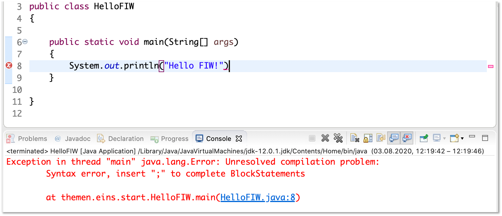
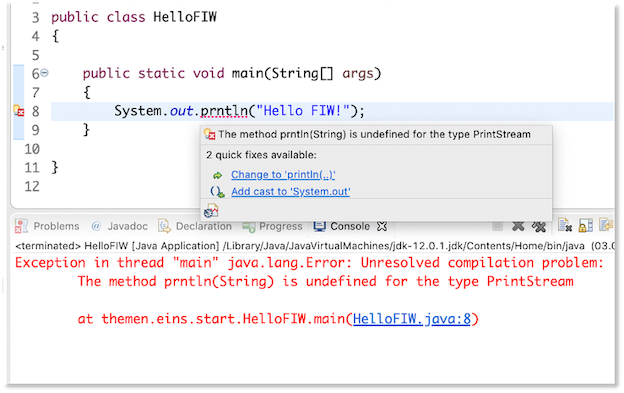

Unser erstes Programm¶
Bevor wir uns mit der Funktionsweise von Java auseinandersetzen, schreiben wir einfach einmal unser erstes Programm. Wir öffnen dazu Eclipse und erstellen uns ein Klasse HelloFIW. Dazu
- erstellen wir uns ein Java-Projekt (falls noch nicht geschehen): Menüpunkt
File --> New --> Java Project, geben dort z.B.WiSe20ein und wenn wir gefragt, werden, ob wir einemodule-info.javaerstellen wollen, wählen wirDon't create. - erstellen wir uns ein Paket: Menüpunkt
File --> New --> Packageund gebenthemen.eins.startein. - erstellen wir uns eine Klasse: Wir wählen das Paket
themen.eins.startaus und wählen den MenüpunktFile --> New --> Class, geben in dem Fenster den KlassennamenHelloFIWein und setzen beipublic static void main(Strg[] args)ein Häkchen:
Im Editor-Fenster von Eclipse erscheint:

Schauen wir uns diesen Code zunächst an:
- in Zeile
1 sehen wir, in welchem Paket sich unsere Klasse befindet. Die Anweisungpackage themen.eins.start;definiert, dass wir uns im Paketthemen.eins.start` befinden. Mit Paketen werden wir uns in Kürze ausführlich auseinandersetzen. - in Zeile
3steht unsere Klassendefinition. Diese erkennen wir am Schlüsselwortclassgefolgt von dem Namen der KlasseHelloFIW. Das Schlüsselwortpublicbeschreibt, dass es sich um eine öffentliche Klasse handelt, die von allen genutzt werden kann. Dieses Schlüsselwort ist ein sogenannter Sichtbarkeitsmodifierer (auch Zugriffsmodifizierer). Mit Sichtbarkeitsmodifizierern werden wir uns ebenfalls noch ausführlich auseinandersetzen. Wichtig ist, dass die Klasse nicht nur aus dem Klassenkopf (public class HelloFIW) besteht, sondern aus allem, was diese Klassen enthält (dem Klassenrumpf). Der Klassenrumpf beginnt mit einer öffnenden geschweiften Klammer{(Zeile4) und endet mit einer schließenden geschweiften Klammer}(Zeile12). - eine Klasse kann beliebig viele Methoden enthalten. Unsere Klasse enthält bis jetzt eine Methode, die Methode namens
main(). Methoden erkennen wir an den runden Klammern nach dem Methodennamen. Hier ist der Namemaingefolgt von runden Klammern, in denen Parameter (auch Argumente genannt) definiert sein können (hier ein Parameter namens àrgsvom Typ String-Array:Strg[] args). Wie bei den Klassen auch, bestehen Methoden aus einem Methodenkopf und einem Methodenrumpf. Wie bei den Klassen auch, beginnt der Methodenrumpf mit einer öffnenden geschweiften Klammer (Zeile7) und endet mit einer schließenden geschweiften Klammer (Zeile10`). Der Methodenkopf- beginnt erneut mit einem Sichtbarkeitsmodifizierer. Dieser ist hier wieder
publicund gibt an, dass diese Methode öffentlich ist und von allen ausgeführt werden kann. - Danach kommt das Schlüsselwort
static. Dieses Schlüsselwort besagt, dass es sich bei dieser Methode um eine Klassenmethode handelt. Das Gegenstück zu einer Klassenmethode ist die Objektmethode. Wir werden uns mit der Unterscheidung zwischen Klassen- und Objektmnethoden ausführlich auseinandersetzen. Wir können uns aber schon merken (wenn überhaupt), dass wir eine Klassenmethode aufrufen können ohne ein Objekt der Klasse erstellen zu müssen. - Danach kommt das Schlüsselwort
void. Dieses Schlüsslwort gibt an, dass die Methode nichts zurückgibt. An dieser Stelle steht der Rückgabetyp eine Methode - wenn die Methode etwas zurückgibt. Unsere Methode gibt nichts zurück, deshalb hiervoid. Wir werden uns mit Methodenrückgaben ausführlich beschäftigen. - Jetzt kommt der Name der Methode, hier
main. Diemain()-Methode ist eine ganz besondere Methode. Sie existiert in einem Programm genau einmal und wird aufgerufen, wenn das Programm aufgerufen wird - die sogenannte Programmmethode. Wenn wir ein Programm ausführen, wird alles das ausgeführt, was in dem Rumpf dermain()-Methode definiert ist (derzeit noch nichts). - In den runden Klammern stehen Parameter (auch Argumente genannt). In unserem Fall ist ein Parameter namens args definiert. Der Datentyp dieses Parameters ist
Strg[], d.h. dass der Parameter einem Array von Zeichenketten Strings entspricht. Wir kümmern uns um Parameter später ausführlich.
- beginnt erneut mit einem Sichtbarkeitsmodifizierer. Dieser ist hier wieder
- In unserer Methode gibt es derzeit nur einen einzigen Eintrag (Zeile
8). Dabei handelt es sich um einen Kommentar, genauer hier um einen Zeilenkommentar. Zeilenkommentare beginnen mit einem Doppelslash//. Hinter diesen Doppelslash können Sie schreiben, was Sie möchten - bis an das Zeilenende. Kommentare dienen Ihnen dazu, den Code verständlicher zu gestalten oder Ihnen Hinweise zu geben. Hier steht der Hinweis, dass die Methode automatisch durch Eclipse erstellt wurde und Sie noch das ToDo haben, die Methode zu befüllen. Das machen wir jetzt auch!
Wir löschen den Kommentar und fügen nun die Anweisung System.out.println("HelloFIW !"); in unseren Methodenrumpf ein. Unsere Klasse sieht nun so aus (die neuhinzugekommene Zeile ist markiert):
1 2 3 4 5 6 7 8 9 10 11 12 | |
Jetzt wählen wir entweder im Menü Run --> Run oder klicken auf den kleinen grünen Kreis mit dem weißen Pfeil in der Mitte in der Werkzeugleiste. Sie werden gefragt, ob Sie Ihr Programm zunächst speichern wollen. Bevor Sie das bestätigen, sollten Sie ein Häkchen setzen, um zu sagen, dass Sie das gar nicht mehr gefragt werden wollen, sondern das Programm immer gespeichert werden soll, bevor Sie es ausführen. In der Konsole erscheint:

Success
Herzlichen Glückwunsch! Sie haben Ihr erstes Java-Programm geschrieben und ausgeführt!
System.out.println("Hello FIW!");¶
Schauen wir uns System.out.println("Hello FIW!"); zunächst etwas genauer an. Wir verwenden hier eine Klasse, nämlcih die Klasse System. Diese Klasse existiert bereits und wurde von den Java-Entwicklern für uns gesschrieben. Sie gehört zum Standardpaket von Java, existiert bereits seit der ersten Version von Java und befindet sich im Paket java.lang. Diese Klasse hat eine interssante Klassenvariable, die wir verwenden, nämlich out. Diese Variable stellt in unserem (Betriebs-)System die Verbindung zu unserem Standardausgabegerät bereit, in unserem Fall die Konsole. Um nun eine Ausgabe auf diese Konsole zu generieren verwenden wir die Methode println(). Wir sehen hier eine typische Notation in Java, die sogenannte Punktnotation. Mithilfe dieser Punktnotation greifen wir auf Eigenschaften von Klassen und Objekten zu. In unserem Beispiel greifen wir mit System.out auf das Standardausgabegerät zu und mit System.out.println() auf die println()-Methode des Ausgabegerätes1.
Die Methode println() erzeugt also eine Ausgabe auf unsere Konsole. Jetzt müssen wir nur noch sagen, WAS ausgegeben werden sollen. Dazu übergeben wir dieser Methode eine Zeichenkette (einen String). Eine Zeichenkette erkennt man an den doppelten Anführungsstrichen "das ist eine Zeichekette". Innerhalb dieser Anführungsstriche können Sie schreiben, was Sie möchten (außer "). Wir haben uns für "Hello FIW!"entschieden und genau diese Zeichenkette (ohne die Anführungsstriche) wird ausgegeben. Die Zeichnkette, die wir ausgeben möchten, schreiben wir in die runden Klammern der println()-Methode, also println("Hello FIW!").
Bei System.out.println("Hello FIW!"); handelt es sich um eine Anweisung. Eine Anweisung endet in Java immer mit einem Semikolon ;. Dieses dürfen wir nicht vergessen, ansonsten haben wir einen Syntaxfehler und unser Programm kann nicht compiliert und nicht ausgeführt werden.
Tipp
Wir müssen System.out.println() von nun an recht häufig schreiben. Deshalb gibt es in Eclipse dafür einen Shortcut. Schreiben Sie einfach syso und klicken dann die Control (Strg)-Taste zusammen mit der Leertaste und dann Enter. Aus dem syso macht Eclipse dann automatisch System.out.println().
println() vs. print()¶
In unserem ersten Programm haben wir die Methode println() verwendet, um etwas auf der Konsole auszugeben. Es gibt noch eine andere Möglichkeit für die Ausgabe auf die Konsole, nämlich die Methode print(), also ohne ln. Das ln steht für Line und gibt an, dass nach der Ausgabe ein Zeilenumbruch erfolgt. Wir ändern zunächst unser Programm, indem wir die Anweisung System.out.println("Hello FIW!"); kopieren und weitere 2x einfügen.
1 2 3 4 5 6 7 8 9 10 11 12 13 | |
Wir führen das Programm erneut aus (grüner Pfeil) und erhalten auf der Konsole die Ausgabe:
Hello FIW!
Hello FIW!
Hello FIW!
Das heißt, dass jede der Ausgaben mithilfe der println()-Methode in einer neuen Zeile erfolgt. Nach jeder Ausgabe erfolgt also ein Zeilenumbruch, der Ausgabecursor wird in die nächste Zeile gesetzt. Die nächste Ausgabe beginnt am Anfang der neuen Zeile.
Wir wollen nun unser Programm ändern und verwenden nicht mehr die println()- Methode, sondern print():
1 2 3 4 5 6 7 8 9 10 11 12 13 | |
Wir führen das Programm erneut aus (grüner Pfeil ) und erhalten auf der Konsole die Ausgabe:
Hello FIW!Hello FIW!Hello FIW!
Die print()-Methode gibt also nur die Zeichenkette aus, führt aber danach keinen Zeilenumbruch durch. Der Ausgabecursor bleibt hinter dem letzten ausgegebenen Zeichen stehen. Unsere drei Zeichenketten werden in der Konsole deshalb hintereinander ausgegeben.
Übung
Was müssen Sie im Programm ändern, damit zwischen ! und H jeweils ein Leerzeichen ist, also anstelle von Hello FIW!Hello FIW!Hello FIW! besser Hello FIW! Hello FIW! Hello FIW! ausgegeben wird?
Wir ändern nun unser Programm erneut und fügen folgende Anweisungen hinzu: System.out.println(). Wir rufen also die println()-Methode auf, ohne eine Zeichenkette zu übergeben, die ausgegeben werden soll. Diese Anweisung sorgt einfach dafür, dass ein Zeilenumbruch erfolgt. Es wird also nichts ausgegeben, aber der Ausgabecursor an den Beginn der nächsten Zeile gesetzt.
1 2 3 4 5 6 7 8 9 10 11 12 13 14 15 16 | |
Wir führen das Programm erneut aus (grüner Pfeil ) und erhalten auf der Konsole die Ausgabe:
Hello FIW!
Hello FIW!
Hello FIW!
Übung
Erzeugen Sie folgende Ausgabe auf der Konsole:
Hello FIW!
Hello FIW!
Hello FIW!
Eine mögliche Lösung
1 2 3 4 5 6 7 8 9 10 11 12 13 14 15 16 | |
Syntaxfehler¶
Programmieren bedeutet auch, Fehler zu machen. Wichtig ist, dass Sie die Fehlerausschriften lesen und die Fehler analysieren. Haben Sie einen Syntaxfehler, so ist ein Bereich Ihres Programmcodes rot unterstrichen und an der Seite erscheint ein rotes Kreuz. Fahren Sie mit der Maus über das rote Kreuz, um die Fehlerausschrift zu erhalten. Bei einem Syntaxfehler lässt sich das Programm nicht compilieren. Sie können es trotzdem versuchen und erhalten die Fehlerausschrift dann auf der Konsole. Das folgende Bild zeigt einen Fehler:

Es erscheint die Fehlermeldung Syntax error, insert ";" to complete BlockStatements - ein Hinweis darauf, dass ein Semikolon fehlt - nämlcih am Ende der Anweisung.
In vielen Fällen bietet Eclipse einen sogenannten Quickfix an. Meistens können Sie diesen Vorschlag einfach annehmen (durch Mausclick auf den Vorschlag). Die folgende Abbildung zeigt einen solchen Quickfix für den Fehler, dass die Methode prntln() nicht existiert (es fehlt das i).

Success
Wir haben unser erstes Java-Programm geschrieben und ausgeführt! Wir haben gelernt, wie wir mithilfe der Methoden println() und print() Zeichenketten auf die Konsole ausgeben können und wir haben uns angeschaut, wie wir Fehlerausschriften lesen. Nun schauen wir uns einmal an, was im Hintergrund passiert, wenn wir das Programm ausführen.
Kommentare¶
In Ihren Quellcode (Ihr Programm) können Sie an allen beliebigen Stellen Kommentare schreiben. Kommentare werden vom Compiler ignoriert, d.h. Sie können dort hineinschreiben, was und wie Sie möchten. Es gibt drei Arten von Kommentaren in Java:
- Zeilenkommentare: Diese beginnen mit
//und danach kommt der Kommentar bis zum Zeilenende. Die neue Zeile ist dann wieder "normaler" QuellcodeSystem.out.println("Ausgabe1"); // hier ist ein Zeilenkommentar bis zum Ende der Zeile System.out.println("Ausgabe2"); // hier ist noch ein Zeilenkommentar - Blockkommentare: Diese beginnen mit
/*und danach kommt der Kommentar. Er kann sich über mehrere Zeilen erstrecken. Ein Blockkommentar endet mit*/. Nach diesem Ende ist sofort wieder "normaler" Quellcode.System.out.println("Ausgabe1"); /* hier ist ein Blockkommentar er kann über beliebig viele Zeilen gehen Er endet erst mit */ System.out.println("Ausgabe2"); - Java-Doc-Kommentare:
javadocist ein Programm aus dem Java Development Kit (JDK). Es wird eingesetzt, um den Code zu dokumentieren. Wir werdenjavadocnoch ausführlich behandeln. Mitjavadockommentierte Klassen finden Sie hier. Java-Doc-Kommentare beginnen mit/**und enden mit*/. Java-Doc-Kommentare verhalten sich wie Blockkommentare. Sie erstrecken sich über mehrere Zeilen und nach dem*/ist, wie bei Blockkommentaren, wieder "normaler" Quellcode.package uebungen.uebung0; /** * * @author jornfreiheit * * Das ist die erste Klasse, die wir geschrieben haben. * Sie erzeugt einfache Ausgaben von Zeichenketten auf * die Konsole. * */ public class MyFirstClass { // Hier die Implementierung unserer Klasse - nicht gezeigt }
Compilieren und Ausführen¶
Wir haben nun unser erstes einfaches Programm geschrieben - in der Programmiersprache Java. Wie wir in Werkzeuge -> Java bereits bei der Installation von Java erläutert haben, ist Java nicht nur eine Programmiersprache, sondern auch ein Programm, in dem wir Java-Programme ausführen können - die Laufzeitumgebung von Java. Wir werden zunächst erläutern, was im Hintergrund passiert, wenn wir ein selbstgeschriebenes Java-Programm ausführen.
Zum besseren Verständnis erzeugen wir uns zunächst ein Verzeichnis test irgendwo auf unserem Rechner:
mkdir test
cd test
Dieses Verzeichnis werden wir später wieder löschen. Nun erzeugen wir uns mithilfe von vioder vim eine Datei Test.java:
vim Test.java
Die Datei öffnet sich zum Schreiben und nach Eingabe von i können wir in diese Datei Text einfügen. Wir fügen folgendes Programm ein (Kopieren Sie das Programm und fügen es mit Strg+V in die Datei Test.java ein:
1 2 3 4 5 6 7 8 9 10 11 12 13 | |
Beenden Sie den Einfügemodus von vim durch Drücken der Taste Esc und speichern die Datei und beenden vim unter Eingabe von ZZ. In unserem Ordner test befindet sich nun die Datei Test.java:
ls -la
zeigt den Inhalt unseres Verzeichnisses test an (z.B.):
total 8
drwxr-xr-x@ 3 jornfreiheit staff 96 3 Aug 14:17 .
drwxr-xr-x@ 39 jornfreiheit staff 1248 1 Nov 2018 ..
-rw-r--r-- 1 jornfreiheit staff 189 3 Aug 14:17 Test.java
Wir haben eine Klasse Test in der Datei erstellt, die genauso heißt, wie die Klasse, nämlich Test.java. Wir werden in Zukunft immer die Klasse in der gleichnamigen Datei speichern, die die Dateiendung .java hat - das macht Eclipse für uns automatisch.
Compilieren der Klasse¶
Ein Computer kann keine Datei ausführen, die in einer Programmiersprache geschrieben wurde, egal um welche Programmiersprache es sich handelt. Computer verstehen nur Folgen von Nullen und Einsen, also so etwas wie 1000111110101011.... In eine solche Maschinensprache muss unser Programm übersetzt werden. Das Übersetzen erfolgt durch einen Compiler2.
Der Java-Compiler heißt javac. Wir haben den Java-Compiler zusammen mit dem Java Development Kit (JDK) installiert (siehe hier). Mithilfe des Compilers übersetzen wir nun unsere Klasse:
javac Test.java
Wenn wir uns nun erneut den Inhalt unseres Verzeichnisses ansehen
ls -la
dann entdecken wir, dass eine Datei Test.class erzeugt wurde.
total 16
drwxr-xr-x@ 4 jornfreiheit staff 128 7 Aug 11:02 .
drwxr-xr-x@ 39 jornfreiheit staff 1248 1 Nov 2018 ..
-rw-r--r-- 1 jornfreiheit staff 1001 7 Aug 11:02 Test.class
-rw-r--r-- 1 jornfreiheit staff 189 3 Aug 14:17 Test.java
Unser Java-Compiler hat unser Programm, das in Test.java enthalten ist, in sogenannten Bytecode übersetzt. Das ist ein Zwischenschritt, den es in Java gibt. Das Programm wird nicht direkt in Maschinencode übersetzt, sondern in Bytecode.
Ausführen des Programms¶
Dieser Bytecode kann nun von der Java-Laufzeitumgebung (Java Runtime Environment - JRE) ausgeführt werden. Diese Laufzeitumgebung ist selbst ein Programm, eine sogenannte Virtuelle Maschine3.
Die Ausführung unseres Programms erfolgt mithilfe der Java-Laufzeitumgebung java:
java Test
Beachten Sie, dass Sie nicht die Dateiendung .class für Ihr Programm angeben (müssen/dürfen). Auf unserer Konsole erscheint die Ausgabe
Hello !
Diese Ausgabe erfolgt durch die Anweisung System.out.print("Hello "); (in Zeile 6), gefolgt von der Anweisung System.out.println("!"); (in Zeile 11). In den Zeilen 7-10 stehen Anweisungen, die wir noch nicht verstehen. Das macht nichts, wir kommen später darauf zurück. Es ist jedoch so, dass wir dadurch unserem Programm Argumente übergeben können. Betrac hten wir zum Beispiel die Anweisung ls -la. ls wäre z.B. ein "Programm" und -la ein Argument (-l sorgt dafür, dass ein langes Listenformat erscheint, also alle Angaben zu den Dateien und Ordnern erscheinen und -a sorgt dafür, dass auch die Dateien und Ordner angezeigt werden, die mit . beginnen). Versuchen wir also einmal, umserem Programm Test ein Argument zu übergeben (ohne -):
java Test FIW
Es erscheint die Ausgabe:
Hello FIW !
Wir können sogar mehrere Argumente übergeben:
java Test FIW HTW Berlin Welt
Es erscheint die Ausgabe:
Hello FIW HTW Berlin Welt !
Es erscheint zunächst aufwendig, das Programm zunächst in Bytecode zu übersetzen und dann den Bytecode nochmal interpretieren und ausführen zu lassen. Warum wird nicht direkt in Maschinencode übersetzt? Die Antwort ist, dass der Java-Compiler so beriebssystemunabhängig arbeiten kann. Alle, egal, ob Windows-, iOS- oder Linux-Nutzerinnen können den gleichen Compiler verwenden. Die Programme können völlig systemunabhängig geschrieben und von allen compiliert werden. Erst die Java-Laufzeitumgebung ist beriebssystemabhängig, d.h. diese wird entsprechend dem Betriebssystem installiert. Alle Java-Programme und auch ihre Compilierung sind jedoch völlig losgelöst vom verwendeten Betriebssystem und können deshalb überall ausgeführt werden.
Success
Wir haben uns angeschaut, was passiert, wenn wir das Programm übersetzen und ausführen. Die Übersetzung erfolgt durch den Java-Compiler javac. Dieser erzeugt Java-Bytecode. Die Ausführung dieses Bytcodes übernimmt die Java-Laufzeitumgebung java. Diese interpretiert den Bytecode und führt ihn sequentiell (also nacheinander, Anweisung für Anweisung) aus.
Was ist Programmieren?¶
Ehe wir uns weiter mit Java und Programmierkonzepten beschäftigen, wollen wir uns bewusst werden, was Programmieren überhaupt ist. Prinzipiell lösen wir beim Programmieren ein Problem mithilfe einer Programmiersprache. Dabei stellt sich die Frage, welche Probleme mithilfe eines Computers lösbar sind und welche nicht. Dazu gibt es umfangreiche theoretische Untersuchungen - viele davon werden Sie in den "Grundlegenden Konzepten der Informatik" diskutieren. Ein wesentlicher Begriff dabei ist Algorithmus. Ein Algorithmus ist eine eindeutige Handlungsvorschrift, die aus endlich vielen einzelnen Schritten besteht und ein Problem löst.
Algorithmen sind also auch Kochrezepte oder Bauanleitungen, wenn sie denn "eindeutig" sind. Wir kennen alle das Problem, dass Handlungsanweisungen nicht immer eindeutig sind - man kann es manchmal so oder so machen. In der Programmierung darf eine solche Mehrdeutigkeit natürlich nicht vorkommen. Der Algorithmusbegriff wurde deshalb detailliert und folgende Eigenschaften müssen für eine Handlungsanweisung für einen Computer gelten, um ein Algrithmus zu sein:
- Finitheit Das Verfahren muss in einem endlichen Text (Programm) eindeutig beschreibbar sein.
- Ausführbarkeit Jeder einzelne Schritt des Verfahrens muss auch tatsächlich ausführbar sein.
- Dynamische Finitheit Das Verfahren darf zu jedem Zeitpunkt nur endlich viel Speicherplatz benötigen.
- Terminierung Das Verfahren muss irgendwann enden, d.h. darf nur endlich viele Ausführungsschritte benötigen.
- Determiniertheit Das Verfahren muss bei denselben Voraussetzungen das gleiche Ergebnis liefern.
- Determinismus Die nächste anzuwendende Regel im Verfahren ist zu jedem Zeitpunkt (in jedem Zustand) eindeutig definiert.
Beispiel: Euklidischer Algorithmus¶
Mit dem euklidischen Algorithmus4 kann der größte gemeinsame Teiler (ggT) zweier Zahlen berechnet werden. In seinen Elementen hat er diesen Algorithmus ungefähr so formuliert:
Euklidischer Algorithmus
Wenn CD aber AB nicht misst, und man nimmt bei AB, CD abwechselnd immer das kleinere vom größeren weg, dann muss (schließlich) eine Zahl übrig bleiben, die die vorangehende misst.
Hm, das ist recht schwierig zu verstehen. Euklid betrachtet die beiden Zahlen, von denen der größte gemeinsame Teiler ermittelt werden soll, als Strecken (AB und CD). Er zieht wiederholt die kleinere der beiden Strecken von der größeren ab. Er wiederholt dies solange, bis die beiden Strecken gleich lang sind - genauer: er wiederholt dies solange, solange die beiden Strecken nicht gleich lang sind (... CD aber AB nicht misst...).
Beispiel: ggT von 24 und 40
- AB: 40, CD: 24, AB größer als CD → 40 - 24 = 16
- AB: 16, CD: 24, CD größer als AB → 24 - 16 = 8
- AB: 16, CD: 8, AB größer als CD → 16 - 8 = 8
- AB: 8, CD: 8, AB gleich CD → Ende → ggT ist 8
Wir versuchen, den Algorithmus in einer verständlicheren und genaueren Sprache zu überführen, ohne bereits eine Programmiersprache zu verwenden. Wir benutzen sogenannten Pseudocode:
Angenommen, die beiden Zahlen, von denen wir den ggT berechnen wollen, sind a und b:
1 2 3 4 5 6 7 | |
Wichtig ist, dass das Einrücken hier eine Bedeutung hat (eine Semantik). In Zeile 1 formulieren wir, dass sich etwas wiederholen soll, solange eine bestimmte Bedingung gilt. Das, was sich wiederholen soll, ist in den Zeilen 2 bis 5 formuliert. Zeile 1 formuliert eine Schleife und in den Zeilen 2-5 befindet sich der Schleifeninhalt. Die Zeilen 2-5 formulieren eine eigenes Konstrukt, nämlich eine Auswahl zwischen Alternativen, abhängig von einer Bedingung. Die Bedingung ist, ob a größer ist als b. Wenn das der Fall ist, dann wird die Alternative ziehe b von a ab und weise das Ergebnis a zu ausgeführt. Ist jedoch a nicht größer als b, dann wird die Alternative ziehe a von b ab und weise das Ergebnis b zu ausgeführt. Ein solches Konstrukt wird Selektion (oder auch bedingte Alternative) genannt. Nachdem entweder Zeile 3 oder Zeile 5 ausgeführt wurde (es wird genau eins von beiden ausgeführt), wird erneut in Zeile 1 geprüft, ob a ungleich b ist. Wenn ja, wird die Selektion wiederholt. Wenn nicht, dann ist die Schleife beendet und Zeile 6 wird ausgeführt. Die in Zeile 6 formulierte Bedingung wenn a gleich b ist, ist eigentlich unnötig.
Frage
Warum ist die Bedingung wenn a gleich b ist in Zeile 6 unnötig?
Wir betrachten nochmals die im obigen Algorithmus betrachteten Konstrukte (wir sprechen vom Kontrollfluss von Anweisungen):
- Iteration: die Schleife, die in Zeile
1formuliert wird und die als Schleifeninhalt die Zeilen2-5hat, beschreibt einen iterativen (sich wiederholenden) Kontrollfluss. - Selektion: die bedingte Alternative, die eine Bedingung prüft (Zeile
2) und dann, je nachdem, ob die Bedingung richtig oder falsch ist, jeweils eine alternative Anweisung ausführt (entweder Zeile3oder Zeile4), wird Selektion genannt (siehe Zeilen2-5). - Sequenz: die Anweisungen werden hintereinander ausgeführt, erst Zeile
1, dann Zeile2, dann entweder Zeile3oder Zeile4usw. Das Hintereinanderausführen von Anweisungen wird Sequenz genannt.
Schauen wir uns für unseren Algorithmus nochmal die Eigenschaften eines Algorithmus an:
- Finitheit unsere Beschreibung des Algorithmus ist endlich (siehe oben).
- Ausführbarkeit jeder einzelne Schritt kann ausgeführt werden.
- Dynamische Finitheit über den Speicherplatz können wir noch nicht viel sagen, aber wir müssen nur einige wenige Zahlen speichern. Das sollte klappen.
- Terminierung Wann endet unser Algorithmus? Was muss gelten? Wissen wir, ob der Algorithmus irgendwann stoppt?
- Determiniertheit Es ist sicherlich nicht so leicht zu sehen, ob bei gleicher Eingabe (die Zahlen
aundb) auch stets der gleiche größte gemneinsame Teiler berechnet wird. Dazu müssten wir uns erstmal überlegen, wie wir das prüfen können. - Determinismus Wir werden unseren Algorithmus nochmal an einem Beispiel durchspielen, um ein Gefühl dafür zu bekommen, dass wir stets wissen, welche Anweisung als nächstes ausgeführt wird.
Beispielzahlen für den euklidischen Algorithmus¶
Wir nehmen die Zahlen a=40 und b=24 und spielen damit unseren Algorithmus durch:
Zeile 1: a (40) ist ungleich b (24), also wird der Schleifeninhalt ausgeführt
Zeile 2: a ist größer als b, also wird Zeile 3 ausgeführt (und genau nicht Zeilen 4 und 5)
Zeile 3: das Ergebnis von a-b ist 16. Der neue Wert von a ist 16.
Zeile 1: wegen wiederhole (Iteration): a (16) ist ungleich b (24), also wird der Schleifeninhalt ausgeführt
Zeile 2: a ist nicht größer als b, also wird Zeile 5 ausgeführt (und genau nicht Zeile 3)
Zeile 5: das Ergebnis von b-a ist 8. Der neue Wert von b ist 8.
Zeile 1: wegen wiederhole (Iteration): a (16) ist ungleich b (8), also wird der Schleifeninhalt ausgeführt
Zeile 2: a ist größer als b, also wird Zeile 3 ausgeführt (und genau nicht Zeile 5)
Zeile 3: das Ergebnis von a-b ist 8. Der neue Wert von a ist 8.
Zeile 1: wegen wiederhole (Iteration): a (8) ist nicht ungleich b (8), also wird der Schleifeninhalt nicht ausgeführt
Zeile 6: a (8) ist gleich b (8)
Zeile 7: der gesuchte ggT ist 8
Ende
Für dieses Beispiel war stets eindeutig, welche Anweisung als nächstes ausgeführt wird. Der Algrorithmus hat auch terminiert, d.h. er wurde beendet und es sollte auch klar sein, dass das Ergebnis für die die Eingabe a=40 und b=24 stets 8 ist.
Fragen
- Was ändert sich, wenn am Anfang
a=24undb=40sind? - Was ändert sich, wenn am Anfang
a=-40undb=24sind? - Was ändert sich, wenn am Anfang
a=-40undb=-24sind? - Was ändert sich, wenn am Anfang
a=24undb=24sind?
Beispiel: (3n+1)-Vermutung (Collatz-Problem)¶
Wir betrachten noch einen weiteren Algorithmus: Als Eingabe bekommen wir eine positive natürliche Zahl, z.B. 5. Der Algorithmus berechnet eine Folge von Zahlen und zwar nach folgender Vorschrift: ist die Zahl ungerade, dann wird ihr Nachfolger dadurch berechnet, dass die Zahl mit 3 multipliziert und dann 1 addiert wird. Ist die Zahl gerade, dann wird ihr Nachfolger dadurch berechnet, dass die Zahl durch 2 geteilt wird. Der Algorithmus stoppt, wenn der Nachfolger 1 ist.
Angenommen, die eingegebene positive natürliche Zahl ist n:
1 2 3 4 5 | |
Wir begeben uns also in eine Schleife und berechnen so lange einen Nachfolger für die Zahl bis der NAchfolger 1ist. Betrachten wir den Algorithmus für die EIngabe von n=5:
Zeile 1: n (5) ist ungleich 1, also wird der Schleifeninhalt ausgeführt
Zeile 2: n ist ungerade, also wird Zeile 3 ausgeführt (und genau nicht Zeilen 4 und 5)
Zeile 3: das Ergebnis von 3*5+1 ist 16. Der neue Wert von n ist 16.
Zeile 1: wegen wiederhole (Iteration): n (16) ist ungleich 1, also wird der Schleifeninhalt ausgeführt
Zeile 2: n ist nicht ungerade, also wird Zeile 5 ausgeführt (und genau nicht Zeile 3)
Zeile 3: das Ergebnis von 16/2 ist 8n. Der neue Wert von n ist 8.
Zeile 1: wegen wiederhole (Iteration): n (8) ist ungleich 1, also wird der Schleifeninhalt ausgeführt
Zeile 2: n ist nicht ungerade, also wird Zeile 5 ausgeführt (und genau nicht Zeile 3)
Zeile 3: das Ergebnis von 8/2 ist 4. Der neue Wert von n ist 4.
Zeile 1: wegen wiederhole (Iteration): n (4) ist ungleich 1, also wird der Schleifeninhalt ausgeführt
Zeile 2: n ist nicht ungerade, also wird Zeile 5 ausgeführt (und genau nicht Zeile 3)
Zeile 3: das Ergebnis von 4/2 ist 2. Der neue Wert von n ist 2.
Zeile 1: wegen wiederhole (Iteration): n (2) ist ungleich 1, also wird der Schleifeninhalt ausgeführt
Zeile 2: n ist nicht ungerade, also wird Zeile 5 ausgeführt (und genau nicht Zeile 3)
Zeile 3: das Ergebnis von 2/2 ist 1. Der neue Wert von n ist 1.
Zeile 1: wegen wiederhole (Iteration): n (1) ist nicht ungleich 1, also wird der Schleifeninhalt nicht ausgeführt
Ende
Auch für dieses Beispiel war erneut stets eindeutig, welche Anweisung als nächstes ausgeführt wird. Der Algrorithmus hat auch terminiert, d.h. er wurde beendet und es sollte auch klar sein, dass das Ergebnis für die die Eingabe n=5 stets 1 ist.
Fragen
- Spielen Sie den Algorithmus ruhig einmal für
n=7durch oder auch für anderen - Denken Sie, dass der Algorithmus für jede beliebige positive natürliche Zahl
nterminiert? - Wenn ein Algorithmus für eine konkrete Eingabe stets ein eindeutiges Ergebnis (und zwar immer das gleiche)liefert, wie können dann Zufallszahlen berechnet werden?
Success
Wir haben ein Verständnis über den Algorithmus-Begriff erlangt und wissen, was Finitheit, Determiniertheit, Determinismus und * Terminierung* bedeuten.
Programmablaufstrukturen¶
Interessanterweise gibt es nur drei verschiedene Ablaufstrukturen in Programmen bzw. Algorithmen. Alle drei haben wir bereits verwendet. Mit Ablaufstrukturen meinen wir die Abarbeitungsreihenfolge von Anweisungen. Man sagt auch Kontrollfluss dazu. Die drei Ablaufstrukturen, die es gibt, sind:
- die Sequenz: die Anweisungen werden in sequenzieller Abfolge, d.h. hintereinander ausgeführt
- die Iteration: die Abläufe werden wiederholt ausgeführt, also in einer Schleife
- die Selektion: die Abläufe werden selektiv, d.h. unter einer bestimmten Bedingung ausgeführt. Man nennt diese Struktur auch Verzweigung oder bedingte Alternative
Wir schauen uns alle drei Kontrollstrukturen einmal genauer an.
Die Sequenz¶
Bei der Sequenz handelt es sich einfach um hintereinander ausgeführte Anweisungen. Es wird stets erst die eine Anweisung vollständig abgearbeitet, ehe die andere begonnen wird.
Anweisung1
Anweisung2
Anweisung3
Ein Beispiel (mit 2 Anweisungen) wäre:
berechne 3*n und weise das Ergebnis n zu
berechne n+1 und weise das Ergebnis n zu
Zur Visulaisierung von Kontrollstrukturen werden auch sogannnte Programmablaufdiagramme oder Programmablaufpläne verwendet. Für eine Sequenz sähe ein solches Ablaufidagramm so aus:

So ein Diagramm wird von oben nach unten gelsen. Es wird also erst Anweisung1 ausgeführt, dann Anweisung2 und zuletzt Anweisung3. Innerhalb einer Sequenz gilt immer single entry/single exit, d.h. keine der Anweisungen innerhalb einer Sequenz kann mehrer Ausgänge oder mehrere Eingänge haben. Es wäre ansonsten nicht-determinsitisch und somit ein Verstoß gegen unseren Algorithmusbegriff.
Die Iteration¶
Bei der Iteration handelt es sich um eine wiederholte Ausführung einer Anweisung bzw. einer Sequenz von Anweisungen. Wie oft eine Iteration ausgeführt wird, hängt von einer Bedingung ab. In der Programmierung sprechen wir bei der Iteration auch von einer Schleife.
Bedingungen für eine solche Schleife haben wir bereits kennengelernt:
solange a ungleich b ist, wiederhole
hier die Anweisung
oder die Anweisungen, die wiederholt werden, solange die Bedingung gilt
bzw.
solange n ungleich 1 ist, wiederhole
hier die Anweisung
oder die Anweisungen, die wiederholt werden, solange die Bedingung gilt
Wichtig ist, dass es auch hier eine strikte Reihenfolge der Abarbeitung der Anweisungen gibt:
- es wird zunächst geprüft, ob die Bedingung erfüllt (wahr) ist, also ob z.B.
a ungleich b istoder obn ungleich 1. Wenn diese Bedingung erfüllt (also wahr) ist, dann werden die Anweisung(en) innerhalb der Schleife nacheinander (sequenziell) abgearbeitet. Erst wenn alle Anweisungen innerhalb der Schleife abgearbeitet wurden, wird die Schleifenbedingung erneut geprüft. Ist sie wieder wahr, werden die Anweisungen innerhalb der Schleife erneut abgearbeitet usw. Ist sie nicht wahr, also wenn z.B.a gleich b istodern gleich 1 ist, dann wird die Schleife beendet und die Anweisungen innerhalb der Schleife nicht (erneut) abgearbeitet.
Das Ablaufdiagramm einer Schleife (Iteration) sieht so aus:
Die eigentliche Iteration ist grün dargestellt. Wir kommen von einer anderen Anweisung und prüfen die Bedingung. Ist sie wahr, wird Anweisung1 ausgeführt.
Beachte
Anweisung1 muss nicht zwingend nur genau eine Anweisung sein. Bei Anweisung1 kann es sich auch um eine Sequenz von Anweisungen oder eine Selektion oder sogar selbst um eine Iteration (Schleife in der Schleife - verschachtelte Schleife) handeln!
Nach jeder Ausführung von Anweisung1 wird die Bedingung erneut geprüft. Ist sie (immernoch) wahr, wird Anweisung1 erneut ausgeführt. Ist die Bedingung jedoch falsch, dann wird Anweisung1 nicht (mehr) ausgeführt, sondern die Schleife wird verlassen und die Anweisung, die der Schleife folgt, wird ausgeführt (Anweisung2) oder das Programm ist dann zu Ende.
Beachte
Es kann sein, dass Anweisung1 gar nicht ausgeführt wird, weil die Bedingung bereits bei der ersten Prüfung falsch ist. Es ist also nicht gesagt, dass sich eine Iteration wirklich wiederholt. Es kann sein, dass Anweisung1 gar nicht oder nur genau ein Mal ausgeführt wird (wenn die Bedingung nach der ersten Ausführung falsch ist). Das ist kein Problem!
Ein Problem ist es jedoch, wenn die Bedingung niemals falsch wird und die Schleife unendlich oft hintereinander ausgeführt wird. Das ist ein Verstoß gegen die Terminierung eines Algorithmus. In einem solchen Fall werden wir irgendwann einen Fehler bei der Programmausführung erhalten (aber erst zur Ausführungszeit, nicht bereits beim Compilieren).
Wir werden uns ausführlich mit Schleifen auseinandersetzen, da sie logisch recht anspruchsvoll und dadurch häufig fehleranfällig sein können.
Die Selektion¶
Bei der Selektion handelt es sich, im Gegensatz zur Iteration, um eine einmalige Ausführung einer (oder mehrerer) Anweisung(en). Jedoch ist diese Ausführung, im Gegensatz zur Sequenz, von einer Bedingung abhängig. Wir hatten eine solche Selektion jeweils in obigen Beispielalgorithmen. Selektion aus dem euklidischen Algorithmus:
wenn a größer ist als b, dann:
ziehe b von a ab und weise das Ergebnis a zu
andernfalls:
ziehe a von b ab und weise das Ergebnis b zu
Selektion aus der (3n+1)-Vermutung (dem Collatz-Problem):
wenn n ungerade, dann:
berechne 3*n +1 und weise das Ergebnis n zu
andernfalls:
berechne n/2 und weise das Ergebnis n zu
Es gibt also immer eine Bedingung (z.B. wenn a größer ist als b) und abhängig vom Wert dieser Bedingung (wahr oder falsch), wird entweder die eine Anweisung (z.B. ziehe b von a ab und weise das Ergebnis a zu) oder die andere (z.B. ziehe a von b ab und weise das Ergebnis b zu) ausgeführt.
Das Ablaufdiagramm einer Selektion sieht so aus:
Beachte
Anweisung1 und auch Anweisung2 müssen nicht zwingend jeweils nur genau eine Anweisung sein. Bei beiden kann es sich auch um eine Sequenz von Anweisungen oder eine Selektion oder um eine Iteration handeln!
Verschachteln von Kontrollstrukturen¶
Mehr als diese drei genannten Kontrollstrukturen gibt es nicht. Aber diese Kontrollstrukturen können beliebig ineinander verschachtelt werden. Überall dort, wo eine Anweisung steht (z.B. Anweisung1) kann auch eine komplette Kontrollstruktur eingesetzt werden, also eine Sequenz von Anwesiungen oder eine Iteration oder eine Selektion. Die kann dann beliebig fortgeführt werden. So entstehen komplexe Strukturen - und somit komplexe Programme.
Ein (immernoch recht einfaches) Beispiel für eine etwas komplexere Struktur:

Übung Programmablaufpläne
Erstellen Sie sowohl für den euklidischen Algorithmus als auch für die (3n+1)-Vermutung einen Programmablaufplan!
Übung Algorithmus und Programmablaufplan
Ein Jahr ist ein Schaltjahr, wenn es sich durch 4 teilen lässt. Außer, es lässt sich durch 100 teilen. Dann ist es doch kein Schaltjahr. Außer, es lässt sich durch 400 teilen. Dann ist es doch ein Schaltjahr. Beschreiben Sie diese Vorschrift als einen Algorithmus in der Form, in der auch der euklidische Algorithmus und die (3n+1)-Vermutung beschrieben wurden. Erstellen Sie dann den dazugehörigen Programmablaufplan.
Success
Wir wissen nun, dass es nur drei verschiedene Programmablaufstrukturen gibt: die Sequenz, die Iteration und die Selektion. Wir haben ein Verständnis davon, was die drei Programmablaufstrukturen ausmacht, welchen Zweck sie haben und was sie voneinander unterscheidet. Wir wissen, dass sich diese Strukturen beliebig ineinander verschachteln lassen.
-
Wenn wir ganz genau sein wollen, dann ist
outvom TypPrintStreamund wir greifen auf die Objektmethodeprintln()desPrintStream-Objektesoutzu. ↩ -
Man unterscheidet bei Programmiersprachen, ob die Programme durch einen Compiler oder durch einen Interpreter übersetzt werden. Programmiersprachen, bei denen die Programme durch einen Interpreter übersetzt werden, werden auch Skriptsprachen genannt. In Skriptsprachen wird jede einzelne Anweisung nach und nach interpretiert, d.h. übersetzt, dann ausgeführt, dann die nächste Anweisung übersetzt, ausgeführt usw. Java-Programme werden compiliert, d.h. sie werden als Ganzes übersetzt und erst dann ausgeführt. ↩
-
Genauer handelt es sich dabei um einen Interpreter. Der Java-Bytecode wird Anweisung für Anweisung interpretiert und ausgeführt. ↩
-
Benannt nach Euklid von Alexandria, einem Mathematiker aus dem 3. Jahrhundert, Autor der Elemente - einem Kompendium des Wissens der Mathematik seiner Zeit. ↩